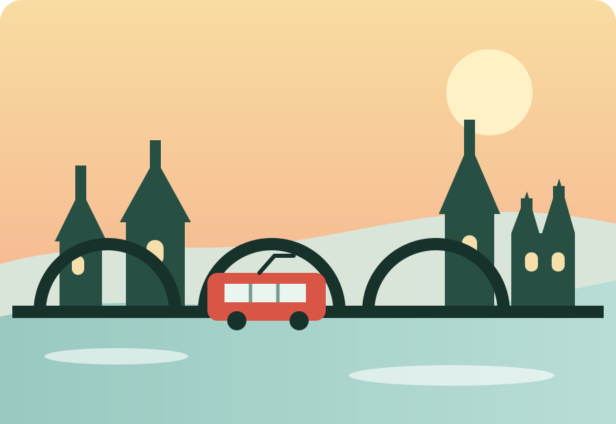

A slow city guide
One memorable day in Prague
Follow a simple walking route from the Old Town to Prague Castle, with space for coffee, views and the city’s quieter corners.
Explore the stops
Suggested route
Four stops, one relaxed day
Start early, walk at your own pace and use tram 22 if the castle hill feels too steep.
- 09:00Old Town Square
- 11:00Charles Bridge
- 13:30Kampa Island
- 16:00Prague Castle
Loaded from JSON
Choose your next stop
Filter the places by the kind of experience you want.
Loading places…